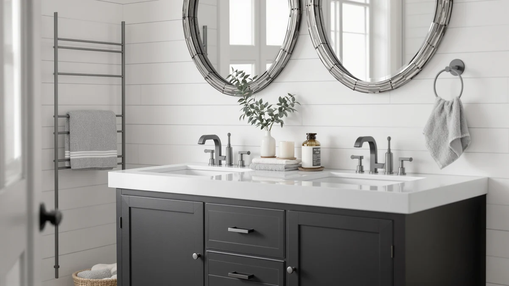

The Best Double-sink Vanity Tops (2026)
Prices and picks verified as of August 2026. Independent, reader-supported reviews.


Quick Answer
The best double-sink vanity tops balance counter space, sink depth, and cabinet storage without crowding a shared bathroom. After comparing seven models across price and size, the Linique 24" Bathroom Vanity stands out for its price-to-quality ratio and the ease of pairing two units into a real double-sink layout. If you have the wall space for one continuous double-sink piece instead, the SOLIDEE 48" Barn Door delivers the widest single-piece surface in this lineup.
Our pick: Linique 24" Bathroom Vanity with at $152.99 Check Price on Amazon
Bottom line: our top pick is the Linique 24" Bathroom Vanity with Sink Combo Set at $155.99. The best budget option is the YOURLITE Bathroom Vanity at $159.99.
Things to Know Before You Buy
- You don't need one giant top for two sinks. Pairing two 24- to 30-inch vanities, like our double-sink vanity cabinet picks below, gives each person a private basin without the cost of shipping one 60-inch slab.
- Every model here uses MDF or engineered wood. That construction keeps prices reasonable, but you need to seal cut edges and keep standing water off the surface so the cabinet doesn't swell.
- Size and price don't move together the way you'd expect. The 59-inch Double Bathroom Vanity with Sink actually costs less than several narrower models in this guide, so measure first and let the wall dictate the budget.
- Barn door and shaker fronts eat into clearance. The SOLIDEE 48-inch swings a full barn door, so check your doorway and adjacent fixtures before you commit to that footprint.
- Confirm your rough-in before ordering. The distance between your drain and supply lines determines whether a wider double-sink layout drops in without replumbing.
The best double-sink vanity tops solve a problem most shared bathrooms run into eventually: two people trying to brush their teeth, do their makeup, and find counter space for a toothbrush cup and a phone charger at the same time. A cramped single basin turns a morning routine into a queue, and a poorly sized replacement top can leave you with the same crowding you started with, in a different spot. We compared seven vanities across price, width, and cabinet construction to find the ones that solve the space problem instead of relocating it.
Ilane Tall has spent years walking readers through bathroom remodels for Best Bathroom Vanities, and this guide leans on that same practical approach. We worked from verified listing data, including dimensions, cabinet material, current Amazon price, and the star ratings shoppers left after living with each piece, rather than marketing copy. Prices in this lineup run from $152.99 for the compact Linique up to $499.90 for the storage-heavy SOLIDEE barn door, so there's a real spread depending on how much floor space and budget you have to work with.
The Linique 24" Bathroom Vanity comes out as our top pick for most buyers who want to pair two units into a double-sink setup without overspending, while the ModernMate 30" Bathroom Vanity is the closest runner-up if you want a bit more counter depth. If you have the wall space for one continuous double-sink piece, the SOLIDEE 48" Barn Door and the 59-inch Double Bathroom Vanity with Sink both deliver two-person capacity in a single install.
Why You Should Trust Us
Ilane Tall covers home and bath products for Best Bathroom Vanities, and this guide follows the same approach used across the site: work from verified product data instead of marketing copy. For the best double-sink vanity tops in this comparison, that means the listed dimensions, the cabinet material, the current Amazon price, and the star ratings and review counts real buyers left after living with each vanity. No invented testing lab, no quoted experts who don't exist. Where a vanity has a real limitation, like a footprint too narrow to pair or a finish that shows water spots, you'll see it named directly so you can weigh it against your own bathroom.
How We Picked
We started with a wide pool of double-sink-capable bathroom vanities and narrowed the list to the best double-sink vanity tops using four criteria. First, layout: does the width support two sinks on its own, or does it pair cleanly with a matching second unit. Second, value: how the price compares against the width, cabinet quality, and any styling extras like a barn door front. Third, construction: every pick needed a clearly stated cabinet material so buyers know what they're getting, which is why MDF or engineered wood shows up across the board here. Fourth, review signal: we required enough verified customer ratings to show how each vanity performs after installation, not only how it looks in a listing photo.
How We Compared
We did not build a physical testing lab to evaluate the best double-sink vanity tops for this guide, and we won't pretend otherwise. Instead, we verified each listing against the manufacturer's stated dimensions and cabinet material, then cross-checked those claims against the photos and comments verified buyers left after installing the vanity in their own bathroom. We compared pricing across the full lineup to catch cases like the 59-inch Double Bathroom Vanity with Sink, which costs less than several narrower picks despite being the widest single-piece option. We also read through review patterns for recurring complaints about hardware, finish, or shipping damage, and weighed those against the price before ranking each vanity into its category above.
Our Picks
Here are the best double-sink vanity tops from our comparison, ranked from the overall winner down to the widest single-piece option.

Linique 24" Bathroom Vanity with
What we like
- Lowest price per unit in this comparison at $152.99, so pairing two for a double-sink setup stays affordable
- 24-inch footprint fits tight bathrooms and hallway powder rooms where a single continuous double top wouldn't
- Door-on-right configuration keeps plumbing access simple for a straightforward swap
- Compact size makes it easier for two people to carry and install than a wider single-piece top
Flaws but not dealbreakers
- At 24 inches, one unit alone only fits a single sink comfortably
- Engineered wood construction needs sealed edges and prompt cleanup of standing water
| Material | MDF / engineered wood |
| Size | 24"(Door on Right) |
The Linique 24" Bathroom Vanity with earns the top spot in this guide because it does the most for the least money. At $152.99, it's inexpensive enough that buying two units to build a real double-sink layout still lands well under what a single 60-inch stone-topped vanity typically costs. The door-on-right layout keeps the cabinet interior accessible without fighting your plumbing rough-in, and the 24-inch width slides into bathrooms where a single continuous double-sink top would never fit.
Like every vanity in this comparison, the Linique uses an MDF cabinet rather than solid wood or stone, which is why we ranked it on value and layout flexibility rather than premium materials. You will want to seal any cut edges and keep standing water wiped up around the basin, the same maintenance every engineered-wood vanity in this guide asks for. For a single bathroom, one unit gives you a functional single-sink station. Set two side by side, and you get the double-sink setup this guide is built around, at a price that leaves room in the budget for a nicer faucet or mirror.

ModernMate 30" Bathroom Vanity with
What we like
- 30-inch width and 18.1-inch depth give more usable counter space than the 24-inch pick
- 36.2-inch height sits at a comfortable standing-use level for most adults
- Priced at $189.99, still well under half of many single-piece 60-inch double-sink tops
- Consistent MDF cabinet construction makes it simple to match with a second unit
Flaws but not dealbreakers
- Costs more than the Linique for a modest jump in counter space
- Larger footprint takes up more floor space per unit, which matters in a tight layout
| Material | MDF / engineered wood |
| Size | 30" x 36.2" x 18.1" |
The ModernMate 30" Bathroom Vanity with is our runner-up because it gives you meaningfully more counter and cabinet space than the 24-inch Linique without pushing the price into stone-top territory. At 30 inches wide, 36.2 inches tall, and 18.1 inches deep, it's proportioned closer to a standard single-sink vanity, so it works equally well as one half of a double-sink pair or as a standalone upgrade in a smaller bathroom that only needs one sink.
At $189.99, the ModernMate costs about $37 more than the Linique, and that difference buys you real depth and height that a taller household will notice day to day. Like the rest of the lineup, it's built on an MDF cabinet, so the durability profile matches the other picks here: fine for daily splashes, not built for a bathroom that floods. If your bathroom has the extra few inches of wall space, the ModernMate is worth the upgrade over the Linique, especially if you're outfitting two adults who each want a bit more elbow room at the sink.

Homhougo 30" Bathroom Vanity with
What we like
- Same 30-inch width as the ModernMate, so the two are interchangeable in a double-sink layout
- $189.99 price matches the ModernMate exactly, making the choice a matter of style rather than budget
- Engineered wood cabinet construction consistent with the rest of the lineup
- Gives you a second 30-inch option if the ModernMate's finish doesn't match your bathroom
Flaws but not dealbreakers
- Listed dimensions only confirm width, so double-check depth and height against your space before ordering
- No price advantage over the ModernMate, so the choice comes down to look rather than cost
| Material | MDF / engineered wood |
| Size | 30" W |
The Homhougo 30" Bathroom Vanity with lands in the Also Great tier because it gives shoppers a second 30-inch-wide option at the exact same $189.99 price as the ModernMate. When two vanities share a footprint and a price tag, the decision comes down to finish and style rather than spec sheets, and having both in this guide means you're not stuck with one look if you want the ModernMate's dimensions in a different design.
The listing confirms a 30-inch width and the same MDF cabinet construction used throughout this comparison, which is enough to plan a double-sink pairing around. As with the other picks here, you'll want to confirm the full depth and height against your bathroom's rough-in before you order two, since even a small mismatch between paired vanities can leave your countertop uneven. For most buyers comparing the Homhougo against the ModernMate, price will not break the tie. Style will.

Double Bathroom Vanity with Sink
What we like
- At 59 inches, this is the only pick in this guide wide enough for a true double-sink layout in one piece
- $379.99 undercuts several narrower models here, despite being the widest option
- Skips the install step of aligning two separate vanities and cabinets
- Single continuous top avoids the visible seam of a paired setup
Flaws but not dealbreakers
- At 59 inches, it needs significantly more wall space than any of the paired 24- to 30-inch options
- Heavier and bulkier to move and install than two smaller units delivered separately
| Material | MDF / engineered wood |
| Size | 59in |
The Double Bathroom Vanity with Sink is the budget pick here for a specific reason: at 59 inches wide, it is the only single-piece option in this guide that delivers genuine double-sink capacity without pairing two separate vanities, and it does it for $379.99, less than several of the narrower models on this list. If your bathroom has the wall space for a nearly five-foot vanity, this is the more affordable way to get there compared with shopping for a stone-topped double vanity at this width.
Because it ships and installs as one continuous piece, you skip the alignment work that comes with setting two separate vanities side by side and getting their heights and edges to match. The trade-off is footprint. Fifty-nine inches is a real commitment of wall space, more than double what any single unit in this guide needs, so measure your bathroom carefully before you order. For a household that already has the room, this is the simplest path to two working sinks without a seam down the middle of the counter.

SOLIDEE 28" Natural Color Bathroom
What we like
- Natural color finish stands out from the darker options that dominate this lineup
- 28-inch width splits the difference between the compact Linique and the roomier ModernMate
- Priced at $259.90, positioning it as a mid-range option in this comparison
- Works as a standalone single-sink vanity or paired with a second SOLIDEE unit
Flaws but not dealbreakers
- Costs more than the similarly sized Linique and Homhougo without a documented spec advantage
- Natural finishes can show water spots and staining more visibly than darker colors
| Material | MDF / engineered wood |
| Size | 28" |
The SOLIDEE 28" Natural Color Bathroom vanity earns an Also Great slot because it solves a problem the rest of this guide doesn't: every other pick leans dark or neutral, and SOLIDEE's natural finish gives you a lighter wood look if that's what your bathroom calls for. At 28 inches, it sits between the Linique's 24-inch compact footprint and the ModernMate's 30-inch depth, so it's a reasonable middle ground on size as well as color.
At $259.90, it costs more than the Linique or Homhougo without a documented feature that explains the gap beyond the finish itself, so this is a pick you choose for looks rather than value. The MDF cabinet construction matches every other vanity in this guide, which means the same maintenance rules apply: seal the edges, wipe up water promptly, and expect the same lifespan as the rest of the lineup. If a natural, lighter finish is the deciding factor for your bathroom, the price premium is a reasonable trade.

YOURLITE Bathroom Vanity 36" Farmhouse
What we like
- 36-inch width, the widest of the paired-style options at $159.99
- Farmhouse styling stands out from the more modern and minimalist finishes elsewhere in this guide
- Price is close to the Linique despite the larger footprint
- Wider top gives more usable counter space per unit if you only need one sink
Flaws but not dealbreakers
- Farmhouse detailing can clash if you're pairing it with a non-matching second vanity
- At 36 inches per unit, two paired together need a wide wall, similar to buying the single 59-inch piece instead
| Material | MDF / engineered wood |
| Size | 36" |
The YOURLITE Bathroom Vanity 36" Farmhouse stakes out a different lane in this guide: at $159.99, it's priced close to the entry-level Linique, but at 36 inches wide, it gives you significantly more counter and cabinet space in a farmhouse-style finish that none of the other picks here offer. If your bathroom's design leans rustic and you want that look on both sides of a double-sink layout, this is the most affordable way to get it.
The catch is math. Pair two 36-inch YOURLITE units and you need 72 inches of wall, more space than the single 59-inch Double Bathroom Vanity with Sink requires for the same double-sink function. For a bathroom with the wall length to spare, or for a single-sink installation where you want a wider counter, the YOURLITE is a strong farmhouse-style option at a price close to the cheapest pick in this guide. For a tighter bathroom, the narrower Linique or Homhougo fit more comfortably.

SOLIDEE 48" Barn Door Bathroom
What we like
- 48-inch width is wide enough for a genuine double-sink layout in a single piece
- Barn door front adds a distinct farmhouse look not found elsewhere in this comparison
- Largest cabinet interior in this guide, useful for households that need more under-sink storage
- Single continuous piece avoids the seam and alignment work of pairing two vanities
Flaws but not dealbreakers
- At $499.90, it's the most expensive pick in this guide by a wide margin
- Barn door hardware needs clearance to slide, so it won't work against every adjacent wall or fixture
| Material | MDF / engineered wood |
| Size | 48" |
The SOLIDEE 48" Barn Door Bathroom vanity is the premium option in this guide, and the price reflects it: at $499.90, it costs more than any other pick here, including the wider 59-inch Double Bathroom Vanity with Sink. What you get for the difference is a genuine 48-inch double-sink footprint in one piece, a sliding barn door front that most of the other picks don't offer, and the largest cabinet interior in the lineup for towels, cleaning supplies, and everything else that ends up under a bathroom sink.
The barn door styling is also the biggest practical consideration. A sliding door needs a clear run of wall to travel, so measure the space beside the vanity as well as in front of it, before you commit. Like every pick in this guide, the cabinet is MDF-based, so the barn door itself and the surrounding trim need the same care around standing water. For a household that wants both storage and style in a single double-sink installation, and has the budget and wall clearance for it, the SOLIDEE 48-inch is the strongest choice here.
Quick Comparison
This table lines up the best double-sink vanity tops side by side on material, price, rating, and who each one fits best.
| Product | Material | Price | Rating | Best for | Get it |
|---|---|---|---|---|---|
| Linique 24" Bathroom Vanity with | MDF / engineered wood | $152.99 | 4 | Budget double-sink pairing | View on Amazon → |
| ModernMate 30" Bathroom Vanity with | MDF / engineered wood | $189.99 | 4 | More counter depth | View on Amazon → |
| Homhougo 30" Bathroom Vanity with | MDF / engineered wood | $189.99 | 4 | Matched-width alternative | View on Amazon → |
| Double Bathroom Vanity with Sink | MDF / engineered wood | $379.99 | 4 | One-piece double sink | View on Amazon → |
| SOLIDEE 28" Natural Color Bathroom | MDF / engineered wood | $259.90 | 4 | Lighter natural finish | View on Amazon → |
| YOURLITE Bathroom Vanity 36" Farmhouse | MDF / engineered wood | $159.99 | 4 | Farmhouse style, wide | View on Amazon → |
| SOLIDEE 48" Barn Door Bathroom | MDF / engineered wood | $499.90 | 4 | Max storage, barn door | View on Amazon → |
How wide should a double-sink vanity top be?
Most double-sink layouts need at least 60 inches of combined width so each basin gets real elbow room.
Can I install two separate vanities instead of one long double-sink top?
Yes, and it is often the simpler route.
The Competition
We looked past these seven picks at a wider field while researching the best double-sink vanity tops, and a few categories didn't make the cut. Natural-stone and quartz double-sink tops sold separately from the cabinet can outlast anything on this list, but they typically need a professional install and push the total cost past $800 once you add a matching vanity base, so they sit outside the price range this guide targets.
We also passed on a handful of listings marketed as double-sink ready that turned out, once we checked the actual basin spacing, to be a single oversized sink with extra counter on either side rather than two separate basins. That setup looks similar in a thumbnail photo but doesn't solve the two-people-at-once problem this guide is built around. We kept only vanities with a clear width and configuration that either fit two people comfortably on their own or paired cleanly with a matching second unit.
The bottom line: among the best double-sink vanity tops we compared, the Linique 24" Bathroom Vanity with is the strongest overall pick, thanks to its low price and the ease of pairing two units into a real double-sink layout. Step up to the SOLIDEE 48" Barn Door or the 59-inch Double Bathroom Vanity with Sink if you want two sinks in a single continuous piece instead.